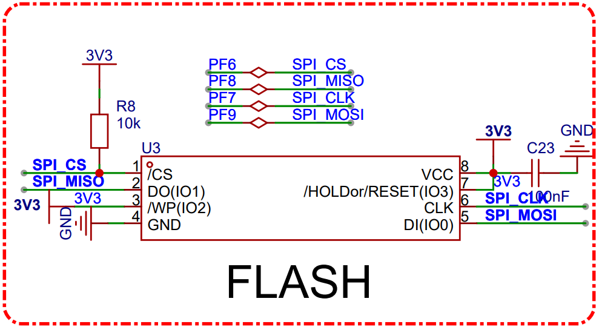
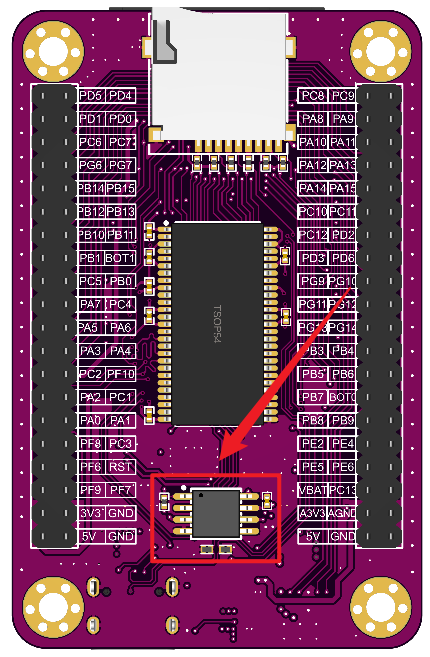
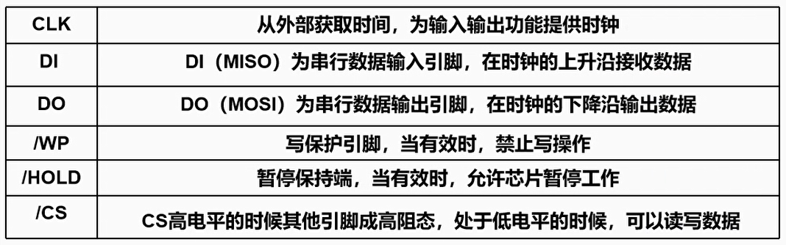
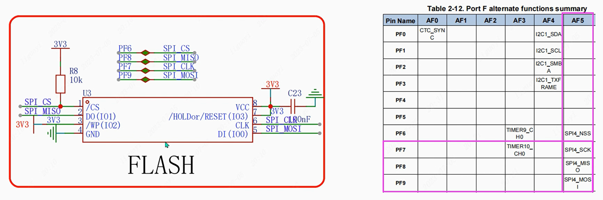
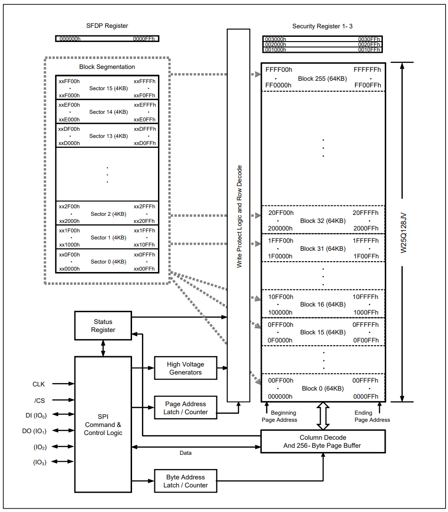

<!DOCTYPE lake>
<h2 data-lake-id="XC3E8" id="XC3E8"><span data-lake-id="uf7932545" id="uf7932545">学习目标</span></h2><ol list="ue4d0e145"><li data-lake-id="ufad96bb0" fid="u77dca40a" id="ufad96bb0"><span data-lake-id="ua0f85cf1" id="ua0f85cf1">掌握w25q128的移植</span></li><li data-lake-id="u3f911136" fid="u77dca40a" id="u3f911136"><span data-lake-id="ud38dc8fd" id="ud38dc8fd">熟悉驱动开发学习方式</span></li></ol><h2 data-lake-id="bpkRg" id="bpkRg"><span data-lake-id="uc6a53a2c" id="uc6a53a2c">学习内容</span></h2><h3 data-lake-id="Icw5R" id="Icw5R"><span data-lake-id="u18a2e6bb" id="u18a2e6bb">原理图</span></h3><p data-lake-id="u72a9232d" id="u72a9232d"></p><p data-lake-id="u20e03610" id="u20e03610"></p><p data-lake-id="ub05a6cd9" id="ub05a6cd9"><strong><span data-lake-id="u0a33282c" id="u0a33282c">引脚说明</span></strong></p><p data-lake-id="u5a36d17b" id="u5a36d17b"></p><p data-lake-id="u4c2abe44" id="u4c2abe44"><strong><span data-lake-id="ubeb6d9c3" id="ubeb6d9c3">SPI选择</span></strong></p><p data-lake-id="u9a5ed365" id="u9a5ed365"></p><h3 data-lake-id="atyJn" id="atyJn"><span data-lake-id="u399444ee" id="u399444ee">W25Q128介绍</span></h3><p data-lake-id="uea97f7f9" id="uea97f7f9"><span data-lake-id="u85b44656" id="u85b44656">W25Q128是一种常见的串行闪存器件，它采用SPI（Serial Peripheral Interface）接口协议，具有高速读写和擦除功能，可用于存储和读取数据。W25Q128芯片容量为128 M-bit（16 M-byte），其中名称后的数字代表不同的容量选项。不同的型号和容量选项可以满足不同应用的需求，比如W25Q16、W25Q32、W25Q128等。通常被用于嵌入式设备、存储设备、路由器等高性能电子设备中。</span></p><p data-lake-id="u1437f4ec" id="u1437f4ec"><span data-lake-id="uc25a9ade" id="uc25a9ade">W25Q128闪存芯片的内存分配是按照扇区（Sector）和块（Block）进行的，每个扇区的大小为4KB，每个块包含16个扇区，即一个块的大小为64KB。</span></p><p data-lake-id="u8b54ee50" id="u8b54ee50"></p><h3 data-lake-id="UoDti" id="UoDti"><span data-lake-id="uf076e26e" id="uf076e26e">实现参考</span></h3><p data-lake-id="u1f767052" id="u1f767052"><a data-lake-id="u6d3f173e" href="https://lceda001.feishu.cn/wiki/Yl6mwgNQiiwolrkqBbscxk45nFb" id="u6d3f173e" rel="noopener noreferrer" target="_blank"><span data-lake-id="u78f708dd" id="u78f708dd">https://lceda001.feishu.cn/wiki/Yl6mwgNQiiwolrkqBbscxk45nFb</span></a></p><p data-lake-id="ue367d916" id="ue367d916"><a class="yuque-card-link" href="../../_assets/7d149e22ebfc1094c72153de.zip">SPI.zip</a></p><h3 data-lake-id="VTaWO" id="VTaWO"><span data-lake-id="ud29cc069" id="ud29cc069">封装改造</span></h3><p data-lake-id="ufd106472" id="ufd106472"><span data-lake-id="u65686027" id="u65686027">官方示例中，耦合太强，进行一些修改，修改后如下：</span></p><span class="yuque-card-unsupported">[codeblock]</span><span class="yuque-card-unsupported">[codeblock]</span><p data-lake-id="u42c90277" id="u42c90277"><span data-lake-id="u718cda6f" id="u718cda6f">测试逻辑如下：</span></p><span class="yuque-card-unsupported">[codeblock]</span><p data-lake-id="u3aea61a2" id="u3aea61a2"><br/></p><h2 data-lake-id="WZD6F" id="WZD6F"><span data-lake-id="u72195309" id="u72195309">练习题</span></h2><ol list="u829e3f86"><li data-lake-id="uf68c1d82" fid="u2f0a5050" id="uf68c1d82"><span data-lake-id="u0eb08e33" id="u0eb08e33">实现GD32平台w25q128的驱动移植</span></li><li data-lake-id="u8a5c8015" fid="u2f0a5050" id="u8a5c8015"><span data-lake-id="ud62c69e0" id="ud62c69e0">实现STM32平台w25q128的驱动移植</span></li></ol>